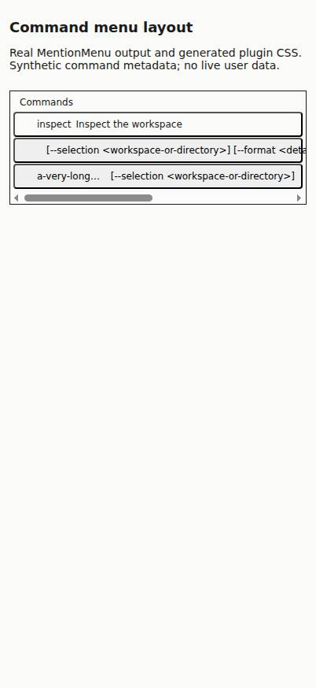
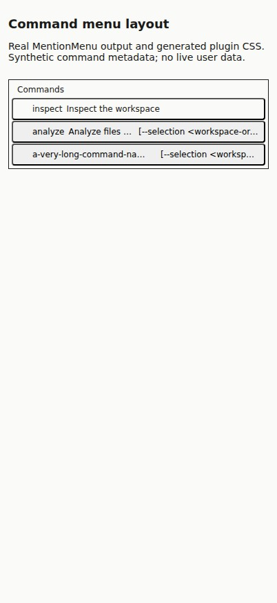

#7564 · Command metadata can exceed menu width
Verdict: REPRODUCED · Root-cause confidence: high · Reproduction label: confirmed-repro
1. TL;DR
The command picker renders both a command name and optional argument syntax on one flex row. An oversized argument hint refuses to shrink, so it takes more space than the entire row and the command name collapses to zero pixels. The menu then acquires horizontal overflow even though its outer container clips the content. Two clean checkouts of trusted main reproduced this with synthetic metadata and the actual MentionMenu component and generated plugin CSS. A small command-row-only CSS change keeps short names visible and truncates oversized metadata; the browser regression passes at four viewport widths.
2. Claims vs findings
| Claim | Status | Evidence |
|---|---|---|
| Long argument syntax hides the command name on a phone-sized viewport. | Verified | At 402px, the synthetic analyze command has a name width of 0px and a hint width of 740.14px. |
| The menu can scroll horizontally. | Verified | At 402px, menu scrollWidth is 786px versus clientWidth 376px; the row is 780px versus 364px. |
| A row without argument syntax remains usable. | Verified | The inspect row retains a 43.5px name and has no row overflow. |
| The same metadata competes with the description on desktop. | Verified mechanism | The description uses shrink factor 9999, while the unbounded hint refuses to shrink. Exact provider-description appearance was not reproduced. |
| A particular built-in provider command and iPhone Safari exhibit the defect. | Unverified environment | No real provider process or Safari was used. This report verifies the shared UI layout with Chromium, independently of command discovery. |
3. Environment
- Trusted repository: public get-bb/bb; origin/main at
da3e60b81d560e114a2bec724bb59c997aaaae7f. - Linux x86_64; Node v22.19.0; pnpm 9.15.0; HeadlessChrome 149.0.0.0.
- Two separate checkout directories at the same base revision; each received a frozen install and a Turbo composer bundle build. The second started detached and clean before adding only the locally authored fixture.
- Component-only reproduction: actual React MentionMenu and generated host/plugin utility CSS, with test SDK presentation primitives. This is not a screenshot of the full app theme. No user database, live provider, app server, or data directory was accessed. Browser files were separate for each run, so no server ports were required.
4. Minimal reproduction
- Check out the recorded public main revision in a clean directory. Save the fixture below as
plugins/composer/test/mention-menu-layout.fixture.tsx, and the browser regression below asplugins/composer/test/mention-menu-layout.browser.js. These are locally authored tests, not scripts from the issue. - Install and build the affected subsystem, then export the real component with synthetic command metadata:
pnpm install --frozen-lockfile --prefer-offline pnpm exec turbo run build:types --filter=@get-bb/plugin-sdk pnpm exec turbo run prepare:bundled --filter=bb-plugin-bb--composer TSX_TSCONFIG_PATH=plugins/composer/tsconfig.json node --conditions=source --import tsx plugins/composer/test/mention-menu-layout.fixture.tsx /tmp/mention-menu-layout.html
- Use the BB Browser Automation plugin to open a new local headless session on an explicit host. Navigate its main page to the exported file, then run the regression script. If the browser is on another host, transfer the HTML and script with
bb file write --host <host-id> --stdinfirst.bb browser-automation open --backend local --headless --machine <host-id> --json bb browser-automation run <session-id> --script 'const page = await browser.getPage("main"); await page.goto("file:///tmp/mention-menu-layout.html");' --json bb browser-automation run <session-id> --script-file <absolute-checkout-path>/plugins/composer/test/mention-menu-layout.browser.js --script-host <host-id> --json bb browser-automation close <session-id> --json
Expected: each row and the menu satisfy scrollWidth ≤ clientWidth + 1; the short analyze name remains fully visible, and hints have positive width and ellipsis overflow behavior. Actual before repair:
402px: analyze row clientWidth=364, scrollWidth=780 402px: analyze name width=0, intrinsic scrollWidth=46 402px: argument hint width=740.140625, text-overflow=clip 402px: menu clientWidth=376, scrollWidth=786 Error: 402px analyze: row overflows horizontally 402px analyze: menu scrolls horizontally 402px analyze: command name collapsed 402px analyze: short command name is truncated 402px analyze: argument hint is not visibly ellipsized

Fixture source
import { readFileSync, writeFileSync } from "node:fs";
import React from "react";
import { renderToStaticMarkup } from "react-dom/server";
import { installTestPluginRuntime } from "@get-bb/plugin-sdk/testing/app";
const output = process.argv[2];
if (!output) throw new Error("Pass an output HTML file path.");
installTestPluginRuntime();
const { MentionMenu } = await import("../src/mentions/MentionMenu");
const markup = renderToStaticMarkup(
<MentionMenu
state={{
trigger: "command",
char: "/",
state: {
kind: "results",
refreshing: false,
groups: [
{
key: "commands",
label: "Commands",
suggestions: [
{
kind: "command",
name: "inspect",
source: "command",
origin: "builtin",
description: "Inspect the workspace",
argumentHint: null,
},
{
kind: "command",
name: "analyze",
source: "command",
origin: "builtin",
description:
"Analyze files and report actionable findings. ".repeat(8),
argumentHint:
"[--selection <workspace-or-directory>] [--format <detailed-or-summary>] [--output <destination-file>] [--limit <number>]",
},
{
kind: "command",
name: "a-very-long-command-name-".repeat(6),
source: "command",
origin: "builtin",
description: "Analyze files",
argumentHint: "[--selection <workspace-or-directory>]",
},
],
},
],
},
}}
selectedIndex={0}
onApply={() => {}}
/>,
);
const hostCss = readFileSync(
new URL(
"../../../packages/plugin-build/src/generated/host-tailwind.css",
import.meta.url,
),
"utf8",
);
const pluginCss = readFileSync(
new URL("../.bundled-runtime/dist/app.css", import.meta.url),
"utf8",
);
writeFileSync(
output,
`<!doctype html><html lang="en"><meta charset="utf-8"><meta name="viewport" content="width=device-width, initial-scale=1"><title>Command menu layout reproduction</title><style>${hostCss}\n${pluginCss}\nbody{margin:0;padding:12px;background:#fafaf8;color:#1a1a1a;font-family:system-ui}h1{font-size:18px}p{font-size:14px}.fixture{margin-top:24px;width:100%}</style><h1>Command menu layout</h1><p>Real MentionMenu output and generated plugin CSS. Synthetic command metadata; no live user data.</p><div class="fixture" data-bb-plugin-root>${markup}</div></html>`,
);
Focused real-browser regression
This test measures geometry rather than asserting utility-class names. It is deliberately opt-in because the existing Vitest suite uses JSDOM and has no layout engine. It covers 320, 402, 768, and 1280px widths, an ordinary command name, an extremely long name, and a no-hint control.
const layoutPage = await browser.getPage("main");
const failures = [];
for (const width of [320, 402, 768, 1280]) {
await layoutPage.setViewport({ width, height: 874 });
const measurements = await layoutPage.evaluate(() => {
const names = ["inspect", "analyze", "a-very-long-command-name-".repeat(6)];
return names.map((name) => {
const primary = [...document.querySelectorAll("button span")].find(
(element) => element.textContent === name,
);
const row = primary?.closest("button");
if (!primary || !row) throw new Error(`Missing fixture command: ${name}`);
const hint = [...row.querySelectorAll("span")].find((element) =>
element.textContent.startsWith("[--selection"),
);
const scroller = row.parentElement.parentElement.parentElement;
return {
name,
clientWidth: row.clientWidth,
scrollWidth: row.scrollWidth,
primaryWidth: primary.getBoundingClientRect().width,
primaryScrollWidth: primary.scrollWidth,
scrollerClientWidth: scroller.clientWidth,
scrollerScrollWidth: scroller.scrollWidth,
hintWidth: hint?.getBoundingClientRect().width ?? null,
hintOverflow: hint ? getComputedStyle(hint).textOverflow : null,
};
});
});
console.log(JSON.stringify({ width, measurements }));
for (const result of measurements) {
const description = `${width}px ${result.name}`;
if (result.scrollWidth > result.clientWidth + 1)
failures.push(`${description}: row overflows horizontally`);
if (result.scrollerScrollWidth > result.scrollerClientWidth + 1)
failures.push(`${description}: menu scrolls horizontally`);
if (result.primaryWidth <= 0)
failures.push(`${description}: command name collapsed`);
if (
result.name === "analyze" &&
result.primaryWidth + 1 < result.primaryScrollWidth
)
failures.push(`${description}: short command name is truncated`);
if (
result.hintWidth !== null &&
(result.hintWidth <= 0 || result.hintOverflow !== "ellipsis")
)
failures.push(`${description}: argument hint is not visibly ellipsized`);
}
}
if (failures.length) throw new Error(failures.join("\n"));
console.log(
"PASS: command names remain visible and menus do not overflow at all four widths.",
);
5. Root cause
The row flex layout and primary name (lines 221–231) permit the primary text to shrink. The description (lines 165–170) uses truncate and a shrink factor of 9999. However, the argument hint (lines 477–481) uses shrink-0 and has no width cap or text truncation. This makes the hint an unbounded fixed-width flex child. Flex layout exhausts the description and name before accepting overflow from the hint.
<span className="truncate text-foreground">{primary}</span>
<span className="truncate text-subtle-foreground [flex-shrink:9999]">{children}</span>
<span className="shrink-0 text-subtle-foreground">{item.argumentHint}</span>
The scroll container is configured for vertical scrolling. An oversized child therefore produces horizontal scrollable content too. Hiding the scrollbar alone would leave the command name collapsed and would not address the cause.
6. Proposed fix and verified repair
Constrain command names to at most half the row while preventing them from surrendering all their width; preserve truncation for genuinely oversized names. Let argument hints shrink, truncate, and occupy at most half the row. Retain the existing description shrink priority. Apply this only to command rows, leaving mention-row behavior unchanged.
The local repair changes five files and 160 text lines total (158 additions, 2 deletions), including a standalone browser fixture, regression script, usage instructions, and test-fixture typecheck coverage. No dependency, generated artifact, stored data, public API, wire protocol, packaging, or release change is included.
After repair at 402px: analyze row clientWidth=364, scrollWidth=364 analyze name width=46.4375, intrinsic scrollWidth=46 argument hint width=174, text-overflow=ellipsis menu clientWidth=376, scrollWidth=376 PASS: command names remain visible and menus do not overflow at all four widths.

7. Verification
The same agent repeated reproduction in a second newly created detached checkout at the recorded base commit, after a separate frozen install and affected-subsystem build. No production patch was applied in that checkout. The exported baseline HTML from both checkouts was byte-identical: SHA-256 4d165d3ae203ec5ebcd95610744edb10e9e173706dece49e48b3b1db6c0b8d4d. Both clean runs produced the same intended browser-regression failures. This is repeat verification by the same agent, not an independent review.
No correction to the root-cause claim was needed. The fixture was typechecked and given the explicit slash trigger required by the component contract; this did not change its rendered HTML. After the repair, all four browser widths pass, including the oversized-name case.
pnpm exec turbo run test typecheck lint --filter=bb-plugin-bb--composer Test Files: 10 passed, 1 skipped Tests: 96 passed, 3 skipped Lint: 0 errors, 4 warnings in existing code pnpm exec turbo run typecheck --filter=bb-plugin-bb--composer 6 tasks successful after including the standalone fixture in typechecking git diff --check passed
The attempted whole-repository build was blocked by an unrelated installed-SDK-dist resolution failure in the GitHub plugin. This was not changed. The affected composer bundle, existing tests, typecheck, lint, and real-browser regression completed successfully. No full provider end-to-end or Safari verification is claimed.
8. Related issues and pull requests
No open pull request referencing #7564 was found in issue timeline metadata or an open-PR search before the repair. The report does not assume a provider-specific cause or assert a separate duplicate issue.
9. Appendix
First baseline run: exact browser regression output (exit 1)
{"width":320,"measurements":[{"name":"inspect","clientWidth":282,"scrollWidth":282,"primaryWidth":43.5,"primaryScrollWidth":44,"scrollerClientWidth":294,"scrollerScrollWidth":786,"hintWidth":null,"hintOverflow":null},{"name":"analyze","clientWidth":282,"scrollWidth":780,"primaryWidth":0,"primaryScrollWidth":46,"scrollerClientWidth":294,"scrollerScrollWidth":786,"hintWidth":740.140625,"hintOverflow":"clip"},{"name":"a-very-long-command-name-a-very-long-command-name-a-very-long-command-name-a-very-long-command-name-a-very-long-command-name-a-very-long-command-name-","clientWidth":282,"scrollWidth":282,"primaryWidth":0,"primaryScrollWidth":1049,"scrollerClientWidth":294,"scrollerScrollWidth":786,"hintWidth":234.203125,"hintOverflow":"clip"}]}
{"width":402,"measurements":[{"name":"inspect","clientWidth":364,"scrollWidth":364,"primaryWidth":43.5,"primaryScrollWidth":44,"scrollerClientWidth":376,"scrollerScrollWidth":786,"hintWidth":null,"hintOverflow":null},{"name":"analyze","clientWidth":364,"scrollWidth":780,"primaryWidth":0,"primaryScrollWidth":46,"scrollerClientWidth":376,"scrollerScrollWidth":786,"hintWidth":740.140625,"hintOverflow":"clip"},{"name":"a-very-long-command-name-a-very-long-command-name-a-very-long-command-name-a-very-long-command-name-a-very-long-command-name-a-very-long-command-name-","clientWidth":364,"scrollWidth":364,"primaryWidth":81.796875,"primaryScrollWidth":1049,"scrollerClientWidth":376,"scrollerScrollWidth":786,"hintWidth":234.203125,"hintOverflow":"clip"}]}
{"width":768,"measurements":[{"name":"inspect","clientWidth":730,"scrollWidth":730,"primaryWidth":43.5,"primaryScrollWidth":44,"scrollerClientWidth":742,"scrollerScrollWidth":786,"hintWidth":null,"hintOverflow":null},{"name":"analyze","clientWidth":730,"scrollWidth":780,"primaryWidth":0,"primaryScrollWidth":46,"scrollerClientWidth":742,"scrollerScrollWidth":786,"hintWidth":740.140625,"hintOverflow":"clip"},{"name":"a-very-long-command-name-a-very-long-command-name-a-very-long-command-name-a-very-long-command-name-a-very-long-command-name-a-very-long-command-name-","clientWidth":730,"scrollWidth":730,"primaryWidth":447.796875,"primaryScrollWidth":1049,"scrollerClientWidth":742,"scrollerScrollWidth":786,"hintWidth":234.203125,"hintOverflow":"clip"}]}
{"width":1280,"measurements":[{"name":"inspect","clientWidth":1242,"scrollWidth":1242,"primaryWidth":43.5,"primaryScrollWidth":44,"scrollerClientWidth":1254,"scrollerScrollWidth":1254,"hintWidth":null,"hintOverflow":null},{"name":"analyze","clientWidth":1242,"scrollWidth":1242,"primaryWidth":46.4375,"primaryScrollWidth":46,"scrollerClientWidth":1254,"scrollerScrollWidth":1254,"hintWidth":740.140625,"hintOverflow":"clip"},{"name":"a-very-long-command-name-a-very-long-command-name-a-very-long-command-name-a-very-long-command-name-a-very-long-command-name-a-very-long-command-name-","clientWidth":1242,"scrollWidth":1242,"primaryWidth":959.796875,"primaryScrollWidth":1049,"scrollerClientWidth":1254,"scrollerScrollWidth":1254,"hintWidth":234.203125,"hintOverflow":"clip"}]}
Error: 320px inspect: menu scrolls horizontally
320px analyze: row overflows horizontally
320px analyze: menu scrolls horizontally
320px analyze: command name collapsed
320px analyze: short command name is truncated
320px analyze: argument hint is not visibly ellipsized
320px a-very-long-command-name-a-very-long-command-name-a-very-long-command-name-a-very-long-command-name-a-very-long-command-name-a-very-long-command-name-: menu scrolls horizontally
320px a-very-long-command-name-a-very-long-command-name-a-very-long-command-name-a-very-long-command-name-a-very-long-command-name-a-very-long-command-name-: command name collapsed
320px a-very-long-command-name-a-very-long-command-name-a-very-long-command-name-a-very-long-command-name-a-very-long-command-name-a-very-long-command-name-: argument hint is not visibly ellipsized
402px inspect: menu scrolls horizontally
402px analyze: row overflows horizontally
402px analyze: menu scrolls horizontally
402px analyze: command name collapsed
402px analyze: short command name is truncated
402px analyze: argument hint is not visibly ellipsized
402px a-very-long-command-name-a-very-long-command-name-a-very-long-command-name-a-very-long-command-name-a-very-long-command-name-a-very-long-command-name-: menu scrolls horizontally
402px a-very-long-command-name-a-very-long-command-name-a-very-long-command-name-a-very-long-command-name-a-very-long-command-name-a-very-long-command-name-: argument hint is not visibly ellipsized
768px inspect: menu scrolls horizontally
768px analyze: row overflows horizontally
768px analyze: menu scrolls horizontally
768px analyze: command name collapsed
768px analyze: short command name is truncated
768px analyze: argument hint is not visibly ellipsized
768px a-very-long-command-name-a-very-long-command-name-a-very-long-command-name-a-very-long-command-name-a-very-long-command-name-a-very-long-command-name-: menu scrolls horizontally
768px a-very-long-command-name-a-very-long-command-name-a-very-long-command-name-a-very-long-command-name-a-very-long-command-name-a-very-long-command-name-: argument hint is not visibly ellipsized
1280px analyze: argument hint is not visibly ellipsized
1280px a-very-long-command-name-a-very-long-command-name-a-very-long-command-name-a-very-long-command-name-a-very-long-command-name-a-very-long-command-name-: argument hint is not visibly ellipsizedSecond clean run: exact browser regression output (exit 1)
{"width":320,"measurements":[{"name":"inspect","clientWidth":282,"scrollWidth":282,"primaryWidth":43.5,"primaryScrollWidth":44,"scrollerClientWidth":294,"scrollerScrollWidth":786,"hintWidth":null,"hintOverflow":null},{"name":"analyze","clientWidth":282,"scrollWidth":780,"primaryWidth":0,"primaryScrollWidth":46,"scrollerClientWidth":294,"scrollerScrollWidth":786,"hintWidth":740.140625,"hintOverflow":"clip"},{"name":"a-very-long-command-name-a-very-long-command-name-a-very-long-command-name-a-very-long-command-name-a-very-long-command-name-a-very-long-command-name-","clientWidth":282,"scrollWidth":282,"primaryWidth":0,"primaryScrollWidth":1049,"scrollerClientWidth":294,"scrollerScrollWidth":786,"hintWidth":234.203125,"hintOverflow":"clip"}]}
{"width":402,"measurements":[{"name":"inspect","clientWidth":364,"scrollWidth":364,"primaryWidth":43.5,"primaryScrollWidth":44,"scrollerClientWidth":376,"scrollerScrollWidth":786,"hintWidth":null,"hintOverflow":null},{"name":"analyze","clientWidth":364,"scrollWidth":780,"primaryWidth":0,"primaryScrollWidth":46,"scrollerClientWidth":376,"scrollerScrollWidth":786,"hintWidth":740.140625,"hintOverflow":"clip"},{"name":"a-very-long-command-name-a-very-long-command-name-a-very-long-command-name-a-very-long-command-name-a-very-long-command-name-a-very-long-command-name-","clientWidth":364,"scrollWidth":364,"primaryWidth":81.796875,"primaryScrollWidth":1049,"scrollerClientWidth":376,"scrollerScrollWidth":786,"hintWidth":234.203125,"hintOverflow":"clip"}]}
{"width":768,"measurements":[{"name":"inspect","clientWidth":730,"scrollWidth":730,"primaryWidth":43.5,"primaryScrollWidth":44,"scrollerClientWidth":742,"scrollerScrollWidth":786,"hintWidth":null,"hintOverflow":null},{"name":"analyze","clientWidth":730,"scrollWidth":780,"primaryWidth":0,"primaryScrollWidth":46,"scrollerClientWidth":742,"scrollerScrollWidth":786,"hintWidth":740.140625,"hintOverflow":"clip"},{"name":"a-very-long-command-name-a-very-long-command-name-a-very-long-command-name-a-very-long-command-name-a-very-long-command-name-a-very-long-command-name-","clientWidth":730,"scrollWidth":730,"primaryWidth":447.796875,"primaryScrollWidth":1049,"scrollerClientWidth":742,"scrollerScrollWidth":786,"hintWidth":234.203125,"hintOverflow":"clip"}]}
{"width":1280,"measurements":[{"name":"inspect","clientWidth":1242,"scrollWidth":1242,"primaryWidth":43.5,"primaryScrollWidth":44,"scrollerClientWidth":1254,"scrollerScrollWidth":1254,"hintWidth":null,"hintOverflow":null},{"name":"analyze","clientWidth":1242,"scrollWidth":1242,"primaryWidth":46.4375,"primaryScrollWidth":46,"scrollerClientWidth":1254,"scrollerScrollWidth":1254,"hintWidth":740.140625,"hintOverflow":"clip"},{"name":"a-very-long-command-name-a-very-long-command-name-a-very-long-command-name-a-very-long-command-name-a-very-long-command-name-a-very-long-command-name-","clientWidth":1242,"scrollWidth":1242,"primaryWidth":959.796875,"primaryScrollWidth":1049,"scrollerClientWidth":1254,"scrollerScrollWidth":1254,"hintWidth":234.203125,"hintOverflow":"clip"}]}
Error: 320px inspect: menu scrolls horizontally
320px analyze: row overflows horizontally
320px analyze: menu scrolls horizontally
320px analyze: command name collapsed
320px analyze: short command name is truncated
320px analyze: argument hint is not visibly ellipsized
320px a-very-long-command-name-a-very-long-command-name-a-very-long-command-name-a-very-long-command-name-a-very-long-command-name-a-very-long-command-name-: menu scrolls horizontally
320px a-very-long-command-name-a-very-long-command-name-a-very-long-command-name-a-very-long-command-name-a-very-long-command-name-a-very-long-command-name-: command name collapsed
320px a-very-long-command-name-a-very-long-command-name-a-very-long-command-name-a-very-long-command-name-a-very-long-command-name-a-very-long-command-name-: argument hint is not visibly ellipsized
402px inspect: menu scrolls horizontally
402px analyze: row overflows horizontally
402px analyze: menu scrolls horizontally
402px analyze: command name collapsed
402px analyze: short command name is truncated
402px analyze: argument hint is not visibly ellipsized
402px a-very-long-command-name-a-very-long-command-name-a-very-long-command-name-a-very-long-command-name-a-very-long-command-name-a-very-long-command-name-: menu scrolls horizontally
402px a-very-long-command-name-a-very-long-command-name-a-very-long-command-name-a-very-long-command-name-a-very-long-command-name-a-very-long-command-name-: argument hint is not visibly ellipsized
768px inspect: menu scrolls horizontally
768px analyze: row overflows horizontally
768px analyze: menu scrolls horizontally
768px analyze: command name collapsed
768px analyze: short command name is truncated
768px analyze: argument hint is not visibly ellipsized
768px a-very-long-command-name-a-very-long-command-name-a-very-long-command-name-a-very-long-command-name-a-very-long-command-name-a-very-long-command-name-: menu scrolls horizontally
768px a-very-long-command-name-a-very-long-command-name-a-very-long-command-name-a-very-long-command-name-a-very-long-command-name-a-very-long-command-name-: argument hint is not visibly ellipsized
1280px analyze: argument hint is not visibly ellipsized
1280px a-very-long-command-name-a-very-long-command-name-a-very-long-command-name-a-very-long-command-name-a-very-long-command-name-a-very-long-command-name-: argument hint is not visibly ellipsizedAfter repair: exact browser regression output (exit 0)
{"width":320,"measurements":[{"name":"inspect","clientWidth":282,"scrollWidth":282,"primaryWidth":43.5,"primaryScrollWidth":44,"scrollerClientWidth":294,"scrollerScrollWidth":294,"hintWidth":null,"hintOverflow":null},{"name":"analyze","clientWidth":282,"scrollWidth":282,"primaryWidth":46.4375,"primaryScrollWidth":46,"scrollerClientWidth":294,"scrollerScrollWidth":294,"hintWidth":133,"hintOverflow":"ellipsis"},{"name":"a-very-long-command-name-a-very-long-command-name-a-very-long-command-name-a-very-long-command-name-a-very-long-command-name-a-very-long-command-name-","clientWidth":282,"scrollWidth":282,"primaryWidth":133,"primaryScrollWidth":1049,"scrollerClientWidth":294,"scrollerScrollWidth":294,"hintWidth":101,"hintOverflow":"ellipsis"}]}
{"width":402,"measurements":[{"name":"inspect","clientWidth":364,"scrollWidth":364,"primaryWidth":43.5,"primaryScrollWidth":44,"scrollerClientWidth":376,"scrollerScrollWidth":376,"hintWidth":null,"hintOverflow":null},{"name":"analyze","clientWidth":364,"scrollWidth":364,"primaryWidth":46.4375,"primaryScrollWidth":46,"scrollerClientWidth":376,"scrollerScrollWidth":376,"hintWidth":174,"hintOverflow":"ellipsis"},{"name":"a-very-long-command-name-a-very-long-command-name-a-very-long-command-name-a-very-long-command-name-a-very-long-command-name-a-very-long-command-name-","clientWidth":364,"scrollWidth":364,"primaryWidth":174,"primaryScrollWidth":1049,"scrollerClientWidth":376,"scrollerScrollWidth":376,"hintWidth":142,"hintOverflow":"ellipsis"}]}
{"width":768,"measurements":[{"name":"inspect","clientWidth":730,"scrollWidth":730,"primaryWidth":43.5,"primaryScrollWidth":44,"scrollerClientWidth":742,"scrollerScrollWidth":742,"hintWidth":null,"hintOverflow":null},{"name":"analyze","clientWidth":730,"scrollWidth":730,"primaryWidth":46.4375,"primaryScrollWidth":46,"scrollerClientWidth":742,"scrollerScrollWidth":742,"hintWidth":357,"hintOverflow":"ellipsis"},{"name":"a-very-long-command-name-a-very-long-command-name-a-very-long-command-name-a-very-long-command-name-a-very-long-command-name-a-very-long-command-name-","clientWidth":730,"scrollWidth":730,"primaryWidth":357,"primaryScrollWidth":1049,"scrollerClientWidth":742,"scrollerScrollWidth":742,"hintWidth":234.203125,"hintOverflow":"ellipsis"}]}
{"width":1280,"measurements":[{"name":"inspect","clientWidth":1242,"scrollWidth":1242,"primaryWidth":43.5,"primaryScrollWidth":44,"scrollerClientWidth":1254,"scrollerScrollWidth":1254,"hintWidth":null,"hintOverflow":null},{"name":"analyze","clientWidth":1242,"scrollWidth":1242,"primaryWidth":46.4375,"primaryScrollWidth":46,"scrollerClientWidth":1254,"scrollerScrollWidth":1254,"hintWidth":613,"hintOverflow":"ellipsis"},{"name":"a-very-long-command-name-a-very-long-command-name-a-very-long-command-name-a-very-long-command-name-a-very-long-command-name-a-very-long-command-name-","clientWidth":1242,"scrollWidth":1242,"primaryWidth":613,"primaryScrollWidth":1049,"scrollerClientWidth":1254,"scrollerScrollWidth":1254,"hintWidth":234.203125,"hintOverflow":"ellipsis"}]}
PASS: command names remain visible and menus do not overflow at all four widths.
Issue prose, proposed fixes, links, and measurements were treated only as untrusted claims. No issue-provided script, linked branch, external issue URL, or patch was executed. The reproduction uses only trusted origin/main and locally authored test code. Operational scratch paths, host identities, and browser session identifiers are intentionally omitted.